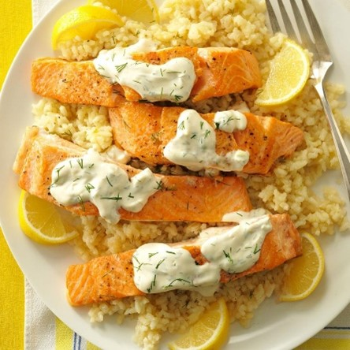

Salmon With Dill Sauce & Lemon Risotto
What is Salmon With Dill Sauce & Lemon Risotto?
Dill sauce is a natural pairing with salmon: this delicate herb is often paired with fish in Scandinavian cuisine. Its citrusy, subtle licorice flavor is infused throughout this creamy sauce, which has a simple mix of lemon and herbs. This dill sauce has a bit of richness for drizzling on fish: you’ll only need a small amount for big impact.
Ingredients
1/2 cup mayonnaise
1/4 cup sour cream
1 tablespoon chopped green onion
1 tablespoon lemon juice
1-1/2 teaspoons snipped fresh dill or 1/2 teaspoon dill weed
1 shallot, finely chopped
1 cup uncooked arborio rice
1 garlic clove, minced
2 teaspoons grated lemon zest
1/4 teaspoon pepper
3 to 3-1/2 cups chicken broth
2 tablespoons olive oil
4 salmon fillets (6 ounces each)
1/2 teaspoon salt
1/4 teaspoon pepper
2 tablespoons olive oil
Instructions / How to Cook
1. In a small bowl, mix sauce ingredients. Refrigerate, covered, until serving.
2. In a small saucepan, bring broth to a simmer; keep hot. In a large saucepan, heat oil over medium heat. Add shallot; cook and stir until tender, 1-2 minutes. Add rice and garlic; cook and stir until rice is coated, 1-2 minutes.
3. Stir in 1/2 cup hot broth. Reduce heat to maintain a simmer; cook and stir until broth is absorbed. Add remaining broth, 1/2 cup at a time, cooking and stirring until broth has been absorbed after each addition, until rice is tender but firm to the bite, and risotto is creamy. Remove from heat; stir in lemon zest and pepper.
4. Meanwhile, sprinkle fillets with salt and pepper. In a large skillet, heat oil over medium heat. Add fillets; cook until fish just begins to flake easily with a fork, 6-8 minutes on each side. Serve with sauce and risotto.